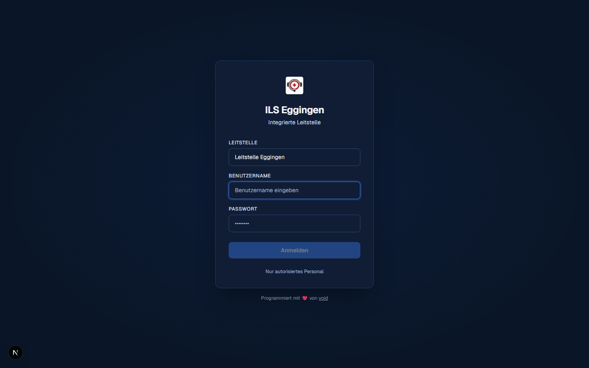
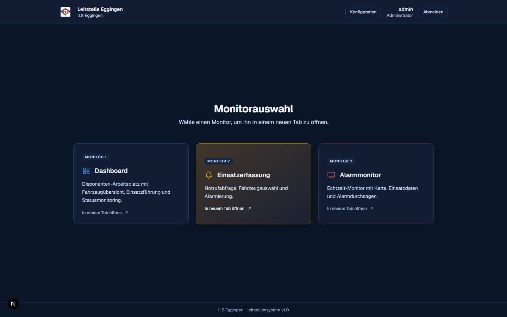

Anmelden & Monitore
Nach der Freischaltung meldest du dich mit Benutzername und Passwort an. Von dort aus öffnest du den passenden Arbeitsplatz – je nachdem, was du gerade tun möchtest.
Anmelden
Ruf die Adresse eurer Leitstelle im Browser auf. Auf der Login-Seite wählst du deine Leitstelle aus der Liste, gibst Benutzername und Passwort ein und klickst auf „Anmelden“.

Der Admin eurer Leitstelle kann dein Passwort in der Benutzerverwaltung zurücksetzen. Bist du selbst der Admin, hilft system@ils.ulm-eggingen.de weiter.
Die Monitor-Auswahl
Nach dem Login landest du auf der Monitorauswahl. Von hier aus öffnest du die drei Arbeitsplätze, jeweils in einem eigenen Tab bzw. Fenster – so können mehrere Monitore gleichzeitig auf verschiedenen Bildschirmen laufen.

Monitor 1 · Dashboard
Der Arbeitsplatz für Disponenten: Fahrzeugstatus, laufende Einsätze, System-Ereignisse und Mitteilungen im Blick. Details unter Dashboard.
Monitor 2 · Einsatzerfassung
Notrufabfrage, Adresse, Fahrzeugauswahl und Alarmierung. Details unter Einsatz erfassen.
Monitor 3 · Alarmmonitor
Der große Bildschirm im Gerätehaus: zeigt im Ruhezustand Uhrzeit, Wetter und Fahrzeugstatus, bei einem Alarm automatisch die Einsatzdetails. Details unter Alarmmonitor.
Konfiguration
Administratoren sehen auf der Monitorauswahl zusätzlich einen Link zur Konfiguration – dort wird die eigene Leitstelle eingerichtet: Fahrzeuge, Einsatzstichworte, Einstellungen und Benutzer. Details unter Verwaltung (Admin).
Design: Hell oder Dunkel
Über dein Profilmenü kannst du zwischen einem hellen und einem dunklen Design wechseln – das ist reine Geschmackssache und wird pro Person gespeichert. Nur der Alarmmonitor bleibt aus Gründen der Lesbarkeit im Gerätehaus immer dunkel.